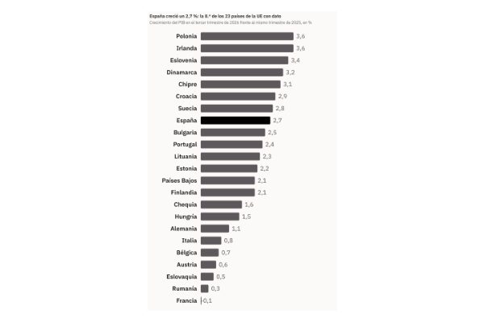

Actualidad · Real Madrid-Alavés · España
Real Madrid-Alavés: en Vitoria, el PSOE ganó en 128 de las 166 secciones, pero en Mendizorrotza, el barrio del estadio del Alavés, el PP sacó el 46,5 %
El día del Real Madrid-Alavés, Vitoria sección a sección en las elecciones generales. El PNV, primero en 41 secciones en 2019, no ganó ninguna en 2023; el Bernabéu está en un barrio donde el PP ganó las 21.
Por Nacho G. del Álamo ·
Cada párrafo lleva una etiqueta: dato (cifra comprobable con las fuentes), patrón (relación que se repite, sin afirmar la causa), hipótesis (explicación posible, sin dos fuentes independientes) o contexto (hechos y declaraciones publicados por otros, enlazados). Cómo verificamos
ContextoEsta noche, a las 21.00, el Real Madrid recibe al Alavés en el Bernabéu, en la jornada 14 de LaLiga, según el horario oficial de LaLiga. Es la víspera de las elecciones generales del 29N, la jornada de reflexión. El Alavés juega en Mendizorrotza, en el barrio del mismo nombre, al sur de Vitoria-Gasteiz, una ciudad de 255.886 habitantes según el padrón municipal de 2023 (INE). Vitoria y Madrid votan de forma muy distinta. Los barrios de sus dos estadios se parecen bastante más.
DatoEn las generales de julio de 2023, el PSOE fue el más votado en Vitoria, con el 29,8 %. Detrás quedaron el PP, con el 19,9 %, EH Bildu, con el 16,7 %, y el PNV, con el 14,3 %. En Madrid, el PP sacó el 41,8 % y el PSOE, el 27,3 %.
DatoVitoria ha cambiado de ganador más que Madrid. El PSOE ganó allí en 2004 y 2008, el PP en 2011, con el 29,4 %, y Podemos en 2015 y 2016, con el 31,7 % la primera vez. Desde abril de 2019, el primero es el PSOE. En la ciudad de Madrid, el PP ganó en todas las generales desde 2004 salvo en las de abril de 2019.
Ver la tabla
| Elección | Más votado | PSOE (%) | PP (%) | PNV (%) | IU / Podemos / Sumar (%) | EH Bildu (%) | Participación (%) |
|---|---|---|---|---|---|---|---|
| 2004 | PSOE | 33,7 | 28,4 | 21,8 | 8,3 | 0,0 | 77,8 |
| 2008 | PSOE | 43,7 | 28,0 | 14,6 | 4,3 | 0,0 | 71,7 |
| 2011 | PP | 25,6 | 29,4 | 15,9 | 4,4 | 16,6 | 69,7 |
| 2015 | Podemos | 15,3 | 20,6 | 13,1 | 31,7 | 10,0 | 72,9 |
| 2016 | Podemos | 17,2 | 22,4 | 13,2 | 31,1 | 7,8 | 67,8 |
| abr. 2019 | PSOE | 24,3 | 15,4 | 20,1 | 18,3 | 11,8 | 70,4 |
| nov. 2019 | PSOE | 23,8 | 16,6 | 21,2 | 17,0 | 13,9 | 68,0 |
| 2023 | PSOE | 29,8 | 19,9 | 14,3 | 13,5 | 16,7 | 66,5 |
De 82 secciones a 128
DatoSección a sección, el cambio de 2019 a 2023 se ve mejor. En noviembre de 2019, el PSOE fue el más votado en 82 de las 166 secciones de Vitoria, el PNV en 41, el PP y Unidas Podemos en 18 cada uno y EH Bildu en 6. En 2023, el PSOE ganó en 128, el PP en 26 y EH Bildu en 12. El PNV no fue primero en ninguna: en la ciudad bajó del 21,2 % al 14,3 %.
Ver la tabla
| Partido | Secciones en 2019 | Secciones en 2023 |
|---|---|---|
| PSOE | 82 | 128 |
| PNV | 41 | 0 |
| PP | 18 | 26 |
| Podemos / Sumar | 18 | 0 |
| EH Bildu | 6 | 12 |
DatoDonde más se nota es en los barrios nuevos del este y del oeste. En Zabalgana, en 2019 ganaban Unidas Podemos (8 secciones) y el PNV (5); en 2023, el PSOE ganó en 12 de las 13. En Salburua, el PSOE pasó de ganar en 1 sección a ganar en 8 de 9. En el Casco Viejo, EH Bildu ganó las 6 secciones, con el 31,1 %, y en Zaramaga el PSOE sacó el 40,1 %, con una participación del 61,9 %.
El barrio de Mendizorrotza
DatoEl estadio del Alavés está en el barrio que más vota al PP de Vitoria. En sus 3 secciones, el PP fue el más votado en las tres, en 2019 y en 2023, y en 2023 sacó el 46,5 %, frente al 21,2 % del PNV y el 13,9 % del PSOE. Es el único barrio de la ciudad donde el PP pasa del 40 %; el siguiente es el Ensanche, con el 35,3 %. Votó el 73,2 %, frente al 66,5 % de toda la ciudad.
DatoLas tres secciones de Mendizorrotza son también las tres de más renta de Vitoria, según el Atlas de Distribución de Renta de los Hogares del INE.
Ver la tabla
| Barrio | PP | PSOE | EH Bildu | PNV | Sumar | Vox | Participación | Secciones | Ganadas por el PP | Ganadas por el PSOE |
|---|---|---|---|---|---|---|---|---|---|---|
| Mendizorrotza | 46,5 | 13,9 | 7,3 | 21,2 | 5,7 | 4,2 | 73,2 | 3 | 3 | 0 |
| Ensanche | 35,3 | 18,1 | 12,0 | 19,5 | 9,6 | 4,1 | 71,7 | 6 | 6 | 0 |
| Gazalbide | 29,7 | 28,0 | 10,8 | 16,0 | 9,0 | 4,3 | 72,4 | 2 | 1 | 1 |
| Lovaina | 29,4 | 21,4 | 13,5 | 18,9 | 11,4 | 3,5 | 72,4 | 6 | 5 | 1 |
| San Martín | 26,1 | 27,7 | 13,1 | 17,4 | 11,3 | 3,3 | 73,8 | 8 | 4 | 4 |
| El Pilar | 25,2 | 37,4 | 11,1 | 10,7 | 10,4 | 3,6 | 64,6 | 7 | 0 | 7 |
| Desamparados | 24,5 | 25,0 | 15,5 | 19,0 | 10,6 | 3,7 | 70,8 | 5 | 3 | 2 |
| Zona Rural Suroeste | 24,5 | 15,7 | 21,6 | 19,3 | 10,6 | 7,0 | 67,3 | 1 | 1 | 0 |
| Txagorritxu | 23,7 | 30,1 | 14,8 | 14,8 | 11,8 | 3,4 | 69,4 | 6 | 1 | 5 |
| Coronación | 21,9 | 28,8 | 17,9 | 14,6 | 11,9 | 3,3 | 63,4 | 8 | 2 | 6 |
| San Cristóbal | 21,4 | 31,7 | 16,0 | 12,7 | 11,8 | 4,4 | 67,7 | 4 | 0 | 4 |
| Zona Rural Este | 20,4 | 18,5 | 22,1 | 19,2 | 13,5 | 5,1 | 65,3 | 1 | 0 | 0 |
| Santiago | 20,0 | 28,9 | 20,3 | 16,1 | 10,7 | 2,6 | 71,2 | 3 | 0 | 3 |
| Ariznabarra | 19,7 | 31,2 | 15,4 | 13,8 | 13,7 | 4,3 | 67,2 | 6 | 0 | 6 |
| El Anglo | 19,2 | 26,4 | 21,7 | 15,5 | 13,4 | 2,4 | 67,8 | 3 | 0 | 2 |
| Aranbizkarra | 18,7 | 38,1 | 15,0 | 12,3 | 11,2 | 3,2 | 67,3 | 8 | 0 | 8 |
| Aretxabaleta-Gardelegi | 18,1 | 19,6 | 20,0 | 17,1 | 17,1 | 6,1 | 71,8 | 1 | 0 | 0 |
| Arantzabela | 18,0 | 32,8 | 16,8 | 14,7 | 13,6 | 2,6 | 69,7 | 1 | 0 | 1 |
| Arana | 17,5 | 38,7 | 16,6 | 12,4 | 10,7 | 2,4 | 61,6 | 2 | 0 | 2 |
| Zaramaga | 17,4 | 40,1 | 14,5 | 11,0 | 11,8 | 3,9 | 61,9 | 8 | 0 | 8 |
| Sansomendi | 16,7 | 34,0 | 14,3 | 11,5 | 15,8 | 5,7 | 65,9 | 11 | 0 | 11 |
| Arriaga-Lakua | 16,6 | 33,7 | 15,1 | 13,4 | 15,2 | 4,1 | 66,2 | 19 | 0 | 19 |
| Judimendi | 16,4 | 27,5 | 24,0 | 15,7 | 11,7 | 2,8 | 66,9 | 4 | 0 | 4 |
| Santa Lucía | 16,2 | 34,8 | 18,9 | 13,2 | 13,2 | 2,6 | 70,6 | 6 | 0 | 6 |
| Adurtza | 16,2 | 34,6 | 18,6 | 12,0 | 13,0 | 3,9 | 65,2 | 4 | 0 | 4 |
| Ali-Gobeo | 15,4 | 40,2 | 11,5 | 12,2 | 9,9 | 8,6 | 54,4 | 2 | 0 | 2 |
| Zabalgana | 13,9 | 27,3 | 20,1 | 13,5 | 17,3 | 5,5 | 63,7 | 13 | 0 | 12 |
| Zona Rural Noroeste | 13,9 | 33,1 | 18,7 | 12,1 | 14,1 | 5,3 | 57,5 | 3 | 0 | 2 |
| Casco Viejo | 12,3 | 23,2 | 31,1 | 11,3 | 17,9 | 2,5 | 60,7 | 6 | 0 | 0 |
| Salburua | 11,8 | 26,8 | 21,5 | 13,8 | 18,6 | 5,0 | 63,9 | 9 | 0 | 8 |
La renta, sección a sección
PatrónSi se ordenan las secciones de Vitoria por renta y se parten en cinco grupos iguales, el PP no es el más votado en ninguna de las tres quintas partes más pobres. En la quinta parte más pobre, el PSOE gana 30 de 34 secciones, con el 35,3 %, y el PP saca el 16,2 %. En la más rica, el PP gana 22 de 33, con el 29,4 %, frente al 22,2 % del PSOE.
Ver la tabla
| Quintil | PSOE | PP | EH Bildu | PNV | Sumar | Participación | Secciones | Ganadas por el PSOE | Ganadas por el PP | Ganadas por EH Bildu |
|---|---|---|---|---|---|---|---|---|---|---|
| Más pobre | 35,3 | 16,2 | 17,8 | 11,3 | 13,5 | 59,6 | 34 | 30 | 0 | 4 |
| 2.º | 34,4 | 17,0 | 16,5 | 12,0 | 13,7 | 64,4 | 33 | 31 | 0 | 2 |
| 3.º | 30,7 | 16,3 | 18,3 | 13,3 | 15,2 | 67,2 | 33 | 31 | 0 | 2 |
| 4.º | 28,2 | 18,9 | 17,8 | 15,2 | 14,3 | 68,4 | 33 | 27 | 4 | 2 |
| Más rico | 22,2 | 29,4 | 13,5 | 18,6 | 10,8 | 72,3 | 33 | 9 | 22 | 2 |
Y el Bernabéu
DatoEl Bernabéu está en el barrio de Hispanoamérica, en el distrito de Chamartín. En sus 21 secciones, el PP fue el más votado en las 21 en 2023, con el 62,1 %, por delante de Vox (16,7 %) y del PSOE (12,8 %). En todo Chamartín ganó en 100 de las 101 secciones, con una participación del 81,0 %, como contamos en Mestalla y el Bernabéu en las urnas.
DatoLas dos ciudades votan en circunscripciones muy distintas. Álava elige 4 diputados y, con los votos de 2023, su último escaño fue para el PNV; al PSOE le habrían bastado 3.126 votantes, como contamos en el voto útil en Álava. Madrid elige 38, y su último escaño fue para el PSOE, con el PP a 35.114 votantes, según el voto útil en Madrid.
Lo que estos datos no dicen
ContextoLas cifras de sección son de las generales de 2023 y de 2019. Los quintiles comparan secciones de la misma ciudad: describen dónde se vota qué, no el efecto de la renta. La renta del INE tiene un tope que alcanzan dos de las tres secciones de Mendizorrotza, así que solo decimos que son las de más renta, no cuánto más. Unidas Podemos en 2019 y Sumar en 2023 no son la misma candidatura.
HipótesisY el fútbol no vota. La afición del Alavés y la del Real Madrid no viven solo junto a sus estadios, y nada de esto dice cómo vota cada una. Lo que muestra el mapa es que los dos estadios están en barrios donde el PP saca mucho más que en el resto de su ciudad, aunque en Vitoria el PSOE ganó en 128 de las 166 secciones. Las calles de cada sección están en cómo votó tu calle, y lo que hay que saber para mañana, en cómo votar el 29N y a qué hora se sabrán los resultados.
Preguntas frecuentes
¿Quién ganó las elecciones generales de 2023 en Vitoria?
El PSOE, con el 29,8 %, por delante del PP (19,9 %), EH Bildu (16,7 %) y el PNV (14,3 %). Fue el más votado en 128 de las 166 secciones.
¿Cómo vota el barrio de Mendizorrotza?
El PP fue el más votado en sus 3 secciones en 2023, con el 46,5 %: es el único barrio de Vitoria donde pasó del 40 %.
¿Cómo vota el barrio del Bernabéu?
En Hispanoamérica, el barrio del estadio, el PP ganó en las 21 secciones en 2023, con el 62,1 %.
Elecciones en Vitoria-Gasteiz · Voto útil en Álava · Mestalla y el Bernabéu en las urnas · El derbi vasco en las urnas · Getafe-Atlético en las urnas · Guía del 29N en Euskadi
Método y fuentes
- Qué se compara
- Las generales de 2004 a 2023 en Vitoria-Gasteiz y en Madrid, y las de noviembre de 2019 y julio de 2023 en las 166 secciones de Vitoria, por barrio y por renta, con el barrio del Bernabéu (Hispanoamérica, Chamartín).
- Límites
- Son datos de 2023 y 2019; la pieza no usa encuestas (jornada de reflexión y veda). Los barrios son los de OpenStreetMap. La renta del INE tiene un tope que alcanzan dos de las tres secciones de Mendizorrotza, así que solo se compara el orden. Los quintiles describen dónde se vota qué, no el efecto de la renta, y nada dice cómo vota cada afición.
- Cómo se calcula
- Voto de cada partido sobre el voto válido de las secciones del barrio (ponderado por votantes); participación sobre el censo; más votado de cada sección lista a lista. Quintiles: las secciones de Vitoria ordenadas por renta por unidad de consumo y partidas en cinco grupos iguales. Estadios situados en su sección por coordenadas. Script: actualidad/src/resumenes/madrid_alaves.py. Cifras reproducibles con los scripts del expediente de la pieza. Metodología de Actualidad · Metodología del Atlas
- Fuentes
- Ministerio del Interior, resultados de las generales de 2004 a 2023 por municipio y sección censal
- INE, Atlas de Distribución de Renta de los Hogares (renta por unidad de consumo por sección)
- LaLiga, horarios de la jornada 14 (6-11-2026)
- Mapa Electoral, voto útil en Araba/Álava
- Mapa Electoral, voto útil en Madrid
- Autoría
- Nacho G. del Álamo
- Revisión de datos y texto
- Nacho G. del Álamo, 28 de noviembre de 2026
- Publicado · actualizado
- 28 de noviembre de 2026 · 28 de noviembre de 2026
- Correcciones
- Ninguna.
Serie «Camino al 29N»: 159 piezas
- Elecciones generales: una de cada tres secciones cambió de ganador entre 2019 y 2023
- Debate Sánchez Feijóo: hora, dónde verlo y quién gana el cara a cara
- Elecciones generales: en Gijón, Vox sacó en 2023 su mejor resultado en Somió, el barrio más rico: 17,0 %
- Veda de encuestas: hasta cuándo se pueden publicar las del 29N
- Cómo votar en las elecciones generales del 29N: horario, qué llevar y cómo saber tu colegio
- A qué hora se sabrán los resultados de las elecciones generales del 29N
- Encuestas Andorra 29N: qué son las encuestas prohibidas y qué dice la ley
- Después de las elecciones generales del 29N: cuándo se constituyen las Cortes y los plazos de la investidura
- Elecciones generales del 29N en cifras: electores, escaños, candidaturas y mesas de cada provincia
- Escrutinio de las elecciones generales del 29N: cómo seguirlo en directo y cuándo es definitivo
- Voto en blanco y voto nulo en las elecciones generales del 29N: qué cuenta y a quién afecta
- Programa electoral de PP, PSOE, Vox y Frente Amplio: qué propone cada uno el 29N
- Estás aquíReal Madrid-Alavés: en Vitoria, el PSOE ganó en 128 de las 166 secciones, pero en Mendizorrotza, el barrio del estadio del Alavés, el PP sacó el 46,5 %
- La víspera del 29N: pueden votar 38.728.356 personas y 37 de los 350 escaños de 2023 cambiaban de manos con menos de un 10 % de votos
- Getafe-Atlético: en la ciudad del Coliseum, el PSOE pasó de ganar en 112 de las 122 secciones a ganar en 74, y el PP se quedó a 2.182 votos
- El derbi sevillano se juega en barrios del PP: en Nervión, el del Sánchez-Pizjuán, ganó en 37 de 41 secciones; en la ciudad, el PSOE fue primero en 286 de 521
- Debate a cuatro: hora, dónde verlo y en qué orden hablan Sánchez, Feijóo, Abascal y Colau
- Los pueblos que siempre aciertan se juegan la racha por un puñado de votos: en Ayerbe, el PP ganó en 2023 por 2
- Votar desde el extranjero el 29N, ley en mano: la urna de los consulados cierra el jueves 26 y esos votos no se cuentan hasta el viernes 4 de diciembre
- El debate a cuatro, comprobado con datos: de cinco frases de Sánchez, Feijóo, Abascal y Colau, solo una es exacta
- Ver las 159 piezas de la serie
Más datos: elecciones en Araba/Álava · elecciones en la Comunidad de Madrid · elecciones en Vitoria-Gasteiz barrio a barrio desde 1977 · Vitoria-Gasteiz calle a calle en el mapa electoral · elecciones generales del 29N de 2026: fecha y escaños por provincia · resultados de las elecciones generales 2026 (29N) y los de 2023 · dónde y cómo votar el 29N: colegio electoral, voto por correo y plazos.
Sigue leyendo
 Crónica del sábadoLa víspera del 29N: pueden votar 38.728.356 personas y 37 de los 350 escaños de 2023 cambiaban de manos con menos de un 10 % de votos
Crónica del sábadoLa víspera del 29N: pueden votar 38.728.356 personas y 37 de los 350 escaños de 2023 cambiaban de manos con menos de un 10 % de votos
El debate, con datosEl debate a cuatro, comprobado con datos: de cinco frases de Sánchez, Feijóo, Abascal y Colau, solo una es exacta Camino al 29NVotar desde el extranjero el 29N, ley en mano: la urna de los consulados cierra el jueves 26 y esos votos no se cuentan hasta el viernes 4 de diciembre
Camino al 29NVotar desde el extranjero el 29N, ley en mano: la urna de los consulados cierra el jueves 26 y esos votos no se cuentan hasta el viernes 4 de diciembre Los pueblos que siempre aciertanLos pueblos que siempre aciertan se juegan la racha por un puñado de votos: en Ayerbe, el PP ganó en 2023 por 2
Los pueblos que siempre aciertanLos pueblos que siempre aciertan se juegan la racha por un puñado de votos: en Ayerbe, el PP ganó en 2023 por 2 El debate a cuatroDebate a cuatro: hora, dónde verlo y en qué orden hablan Sánchez, Feijóo, Abascal y Colau
El debate a cuatroDebate a cuatro: hora, dónde verlo y en qué orden hablan Sánchez, Feijóo, Abascal y Colau Camino al 29NVoto en blanco y voto nulo en las elecciones generales del 29N: qué cuenta y a quién afecta
Camino al 29NVoto en blanco y voto nulo en las elecciones generales del 29N: qué cuenta y a quién afecta